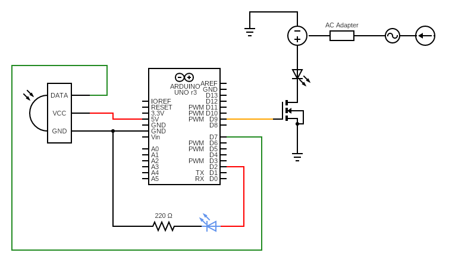
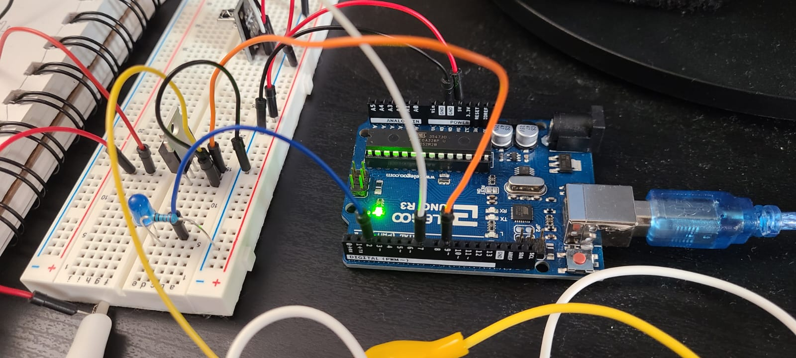

Atharv's Assignment 5: Load!

Here is all the documentation for assignment 5!
Here is all the documentation for assignment 5!

The schematic of my whole setup is here!

Here are some photos of the breadboard circuit where you can see all the
connections from different angles.
Here is the Arduino code I wrote and used for this button/fade pattern:
#include
#include
/*
HCDE 439: Physical Computing (Winter '22)
Student: Atharv W
Assignment 5: Load!
The remote ON/OFF button toggles the led strip on
and off as well as the blue led on and off at the
same time. In the future, I will also have the
up and down buttons increase or decrease the
brightness of the strip.
*/
#include
// pin initialization
const int RECV_PIN = 7;
const int ledpin = 2;
const int ledstrip = 9;
// variables needed
int brightness = 127; // brightness of led
boolean stat = false; // stores whether led is on or off
IRrecv irrecv(RECV_PIN);
decode_results results;
void setup(){
Serial.begin(9600); // starting serial port
irrecv.enableIRIn();
irrecv.blink13(true);
pinMode(ledpin, OUTPUT); // setting led pin to output
pinMode(ledstrip, OUTPUT); // setting transistor pin
// (which is connected to led strip) to output
}
void loop(){
// when the IR receiver is receiving
if (irrecv.decode(&results)){
// print the hex code of the received binary data
Serial.print(results.value, HEX);
// to check which button was pressed
switch(results.value){
case 0xFFA25D: //Remote button "ON/OFF" pressed
if(stat == true){ // if lights is already on
digitalWrite(ledpin, LOW); // turn led off
analogWrite(ledstrip, 0); // turn led strip off
Serial.println("\t OFF"); // print OFF to serial
stat = false; // set status to false because no lights are off
delay(100);
} else { // if lights are off
digitalWrite(ledpin, HIGH); // turn led on
analogWrite(ledstrip, brightness); // turn led strip on
Serial.println("\t ON"); // print ON to serial
stat = true; // set status to true because lights are now on
delay(100);
}
break; // end button case
}
// for brightness control
// switch(results.value){
// case 0xFF18E7: //Keypad button "2"
// digitalWrite(greenPin, HIGH);
// delay(2000);
// digitalWrite(greenPin, LOW);
// }
irrecv.resume();
}
}
// on off button HEX code = FFA25D

Enjoy this gif I made!